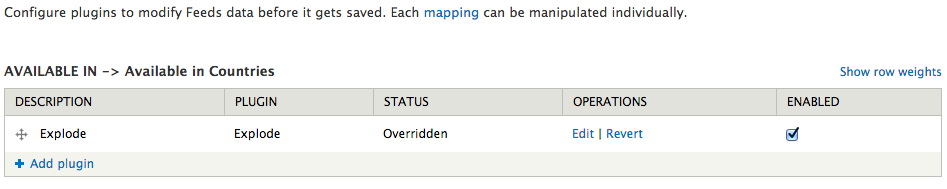
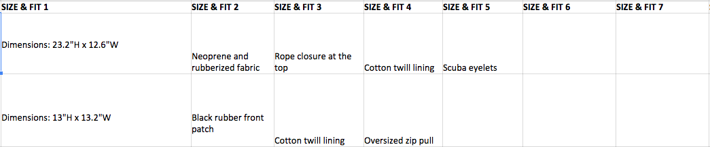

Hunter Boots
A case study
Presented by Rob Higgins and Remy Denton of Isovera
remydenton.github.io/hunter-case-study
The project: A little background
- Hunter Boots sells fashion apparel
- This is the site we're talking about: us.hunterboots.com
- U.S. site launched on Drupal in Q4 2011
What we're focusing on today
(So you know whether it's worth sticking around)
7 specific problems and our clever solutions
What we're focusing on today
- Arbitrarily sorting a view using Draggable Views
- Uploading new products in bulk (and maintaining your sanity)
- Allowing admins to run custom actions on an order
- Building a site for two different countries using domain context
- Integrating with fulfillment warehouses
- Integrating with Retail Pro
- Effectively using Geo IP Lookup to get customers to the right site
1. "Merchandising" products using draggable views
Problem: Admins want to be able to change order of product displays in a view
Original Solution
Add a "Product Order" field to the product display content type.
Why is this a terrible idea?
- Difficult to maintain
- Not flexible
A Better solution
Add a draggable views attachment to the view
How this works
- Add a new attachment display to your view, format as 'table'
- Ensure the filter criteria (including contextual filters) match
- Add 'Draggableviews: Weight' as a sort criterion
- Update permissions so only admins can see the attachment
Bonus Tip
If views caching is enabled, use the cache actions module.2. Uploading new products using feeds
Problem: Several times a year, Hunter adds a lot of new product
Low-tech solution
Add products manually
Better Solution: Feeds
Hunter sends us three things:
- A spreadsheet of new product display nodes
- A spreadsheet of new commerce products
- A directory of images (referenced in the product spreadsheet)
Then, we run two imports:
- Product display node importer
- Run this import a second time to add related products
- Commerce product importer
- Uses Commerce Feeds module
- Run only after uploading the images to the public files directory
Attaching commerce products to displays
- Arbitrary, unique "style code"
- Attaching happens during the import of either feed
Massaging the data
- Leverage feeds tamper when possible 
- It's okay to use formulas in your spreadsheet 
Feeds Best practices
Create a spec for the spreadsheets
(for both admins and yourself)Feeds Best practices
Set error messages whenever you possibly can
(errors in the data are practically guaranteed)
drupal_set_message(t('No product display with the display code %display_code exists.',
array('%display_code' => $display_code)), 'warning', FALSE);
Set error messages whenever you possibly can
(errors in the data are practically guaranteed)
drupal_set_message(t('No product display with the display code %display_code exists.',
array('%display_code' => $display_code)), 'warning', FALSE);
Feeds Best practices
- Be very careful when updating existing commerce products
- Import as published/enabled when testing, unpublished/disabled on production
3. Allowing admins to run custom actions on an order
Problem: Admins want to re-post an order to the warehouse.
Problem: Admins want to recalculate sales tax for an order.
Original Solution
Just take care of it on the command line...
$ drush ev _hunter_orders_post_xml_to_ph($order, TRUE);
A Better Solution
Create a custom views bulk operation
/admin/commerce/orders
/**
* Implements hook_action_info().
*/
function hunter_orders_action_info() {
return array(
'hunter_orders_post_to_powerhouse' => array(
'type' => 'commerce_order',
'label' => t('Re-post to Powerhouse'),
'configurable' => FALSE,
'triggers' => array('any'),
),
);
}
/**
* Custom action callback to repost an order to Powerhouse.
*/
function hunter_orders_post_to_powerhouse(&$order, $context) {
_hunter_orders_post_xml_to_ph($order, TRUE);
}
/admin/commerce/orders
4. Using domain context to build two sites in one
- We run both US and CA sites off of one Drupal site without using Localization
- Relies on both contexts and country codes/domains set in the settings.php file
- Product availability is specified using "Available In" fields as well as country specific pricing fields
Why didn't we use localization?
- Localization requires the creation of duplicate content for each country.
- This would be additional work for content editors, as well as be very complex when integrated with our product/product display methodology.
What did we use? Settings.php in conjunction with Contexts
- Within settings.php we define Country codes that contain the domains associated with each country as well as much more information.
- Relies on both contexts and country codes/domains set in the settings.php file
- Product availability is specified using "Available In" fields as well as country specific pricing fields
Settings.php Example
Context Example #1
Context Example #2
Custom fields are used for stock, availability and price
5. Integrating with fulfillment warehouses
- We integrate with two warehouses, Powerhouse for the US and NLS for CA
- Use XML feeds of placed orders to initiate communication
- Then we use Services to recieve updates for the orders, status changes, shipping info and returns
Feed of orders polled by warehouses to initiate communication
- This is built on cron when an order reaches Checkout: Complete status and payment is authorized
- The warehouses poll these feeds for new orders and post a response to a Service API to confirm receipt, this order is now Pending
- This feed is country specific based on contexts and domain name
Example Feed Part 1: The Customer Info
- Ths section contains shipping and billing information, this will be downloaded and saved into the warehouses management system
Example Feed Part 2: The Order Info
- This section contains all the order info, each line item is a product, with the necessary info for the warehouse staff to pick, pack and ship this order.
Warehouse use Service API's to communicate back after order is picked up
- Every response is queued and processed using the core Queue API. This drastically cuts back on load during bulk posts
- The warehouses post an initial reciept to the OrderUpdate Service. This makes the order pending
- The warehouses will then post another Update with shipping info once they have it. This triggers the capturing of payment, and marks order as complete
- Warehouses use a ReturnOrder Service to post returns when they recieve them. This follows the same Queued messaging protocol of Orders
Order Service Example
- The actual processing code is out of scope of this presentation. But you can see how pretty much anything can be accomplished using this methodology
- It is STRONGLY recommended to use transactions for all of your updates to the Commerce Order to ensure data integrity

6. Integrating with RetailPro
- Retailpro is a back-office accounting software product
- Ideal integration is Website -> Fulfillment -> Back-Office, unfourtunately this was not possible with the Canadian warehouse.
- We had to build a full featured integration, covering Customer, Order and Return data
- This project is MASSIVE, and could have a full presentation dedicated to it, for more info, see Here for more info regarding this and other topics.
What were the requirements?
- We needed to provide XML files containing Customer information, Order Information and Return Information at the correct order transitions
- These XML files needed to be provided via an FTP server that Retailpro could access
- The data in these files must be private, both within Drupal and on the server
The Major Issues: AKA Reverse Engineering and Return Hell
- The #1 issue we faced on this project was that we were not provided an API spec, we had to reverse engineer files created by our US warehouse. While this isn't really a cool "tech" topic to discuss. It brings to light some of the difficulties you may have integrating with 3rd parties
- We needed to ensure that these files contained info on the items that were returned, unfourtunately, the return process actually removes the returned items
- Our FTP server needed to live in a CHROOTED home directory that the webserver could not have access too
Issue #1 "No API Docs" - Solution?: Lots of hard work
- This item really brought to light the absolute necessity of having a full fledge stage environment and dev/test setups with all 3rd parties
- This took upwards of 40 iterations to finally have a usable spec, and this was all possible due to a test integration on the stage server
Issue #2 "No Returned Items after Return Completes" - Solution?: Using Entity Metadata Wrappers and Timing the Creation vs Saving of files
- We implemented SimpleXML in conjunction with Entity Metadata Wrappers of the Commerce Order object to generate the XML files
- This works great for generating Order files on the transition from Processing to Complete, but returns need extra work
- Since items are removed from the order during the return process, we generate the XML at the beginning of the return, but save once it is completed
- This allows us to have access to the full order object, but not actually send the data until the return is authorized and completed
Generation Example
How this is Called?

How this is Saved?
- Here you can see the XML saved above is passed into the function again, this time utilizing the $provided_xml variable
Issue #3 "Must Eventually End up in a Private FTP Server Location" - Solution?: CHROOTED FTP and CRON
- Save XML files to the Drupal private files location. This should be above the WebRoot.
- Set up an FTP server, which lands in a CHROOTED home directory. CHROOTING is beyond this presentation but necessary for security
- Since we don't want the webserver to be able to write directly to the FTP location, use a root cron job to sync files to the FTP from private files
- This has the added benefit of creating an archive of all files, regardless of what the Retailpro FTP account does with them
7. Using GEO IP lookup
Utlizes SmartIP in conjunction with custom AJAX callback
- Integrates with Maxmind Geo Lookup services using the SmartIP module
- AJAX callback function returns the current country, visitors country and other data.
Javascript calls AJAX function and provides Popup
- Drupal Javascript Behavior handles cookie get/set and logic for which links to display. If cookie is not set and the user is not on the site that matches their IP location, popup is shown.